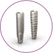
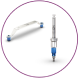
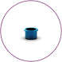

A cirurgia guiada foi desenvolvida para reduzir a duração do
procedimento, garantindo que o implante seja instalado na posição
planejada

Completo
Portfólio de implantes Helix® e Drive GM®

Prático
Instrumentos identificados por cor e marcados a laser

Flexível
Duas posições de alturas para as Anilhas